Znak dziennika: runda 4, FVG
Wybór użytkownika z rundy 3: szkic 2, FVG. Trzy warianty kompozycji, ten sam detal: metal z refleksem na świecach, knoty z obu stron, siatka wykresu 4%, cień i poświata. Każdy ma osobny favicon 16–32 px, który dalej czyta się jako luka. Tło #0b0e12, akcent #e8a44c. „Dziennik” to nazwa robocza (tekst roboczy).
3 warianty kompozycji
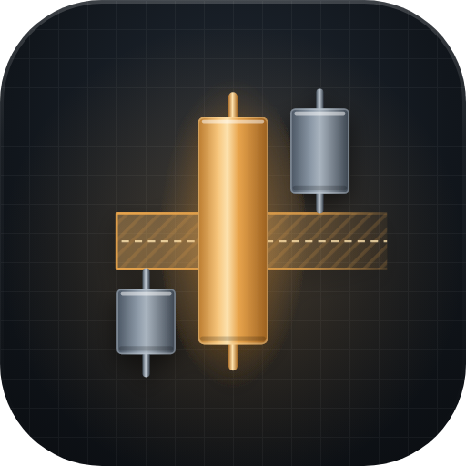
Bycza luka z CErekomendacja
Bycza luka: świece rosną, złota świeca przemieszczenia przecina złotą strefę z drobnym kreskowaniem i przerywaną linią CE 50%; favicon to złota świeca na złotym paśmie między dwiema stalowymi.
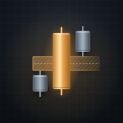
180 iOS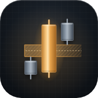
192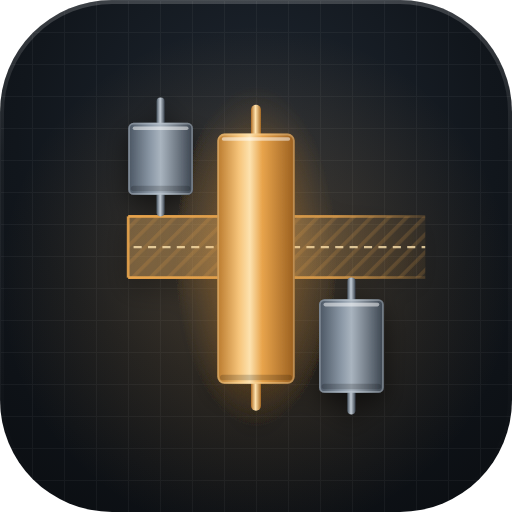
Niedźwiedzia luka z CE
Lustrzane odbicie: luka niedźwiedzia, świece spadają, ta sama strefa z CE; czyta się równie dobrze, ale spadek w znaku dziennika daje gorsze pierwsze wrażenie.
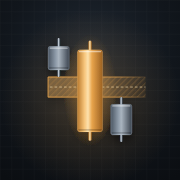
180 iOS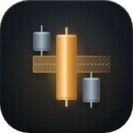
192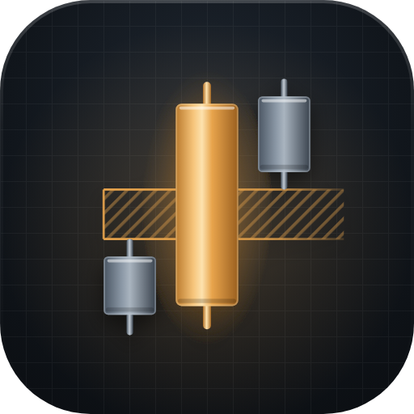
Bycza luka jako przerwa
Bycza luka bez wypełnienia: strefa to samo ukośne kreskowanie między dwiema złotymi krawędziami, bez CE; najbardziej techniczna, ale przy 16 px luka to tylko dwie kreski.
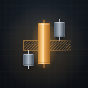
180 iOS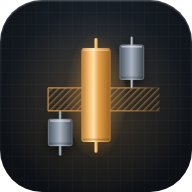
192Rekomendacja: Bycza luka z CE
Pełny znak 512 px
Bycza luka z CE
Trzy świece z metalu na siatce wykresu: złota świeca przemieszczenia w środku, stalowe po bokach, a między knotem pierwszej i trzeciej złota strefa FVG z krawędziami, drobnym kreskowaniem i przerywaną linią CE 50%, widoczną od ok. 180 px.
8/10. 10 wyglądałoby tak: strefa świeci jak złoto, a nie jak przezroczysty brąz (na ciemnym tle półprzezroczysty akcent zawsze trochę brązowieje), a stalowe świece mają jeszcze jeden poziom detalu, np. delikatną fakturę szczotkowanego metalu. Favicon przy 16 px czyta się jako złota świeca na złotym paśmie, ale stalowe świeczki to już tylko szare kropki.
Poprawione przed pokazaniem: cieńsze knoty i mniejsze zaokrąglenia (wcześniej świece wyglądały jak baterie), cały znak zmniejszony do 90% kafla dla oddechu, strefa jaśniejszym złotem #f5b968 zamiast akcentu i z delikatnym kreskowaniem pod CE, krawędzie strefy wygaszane w prawo jak pole FVG na wykresie, knoty z obu stron świec z metalu z refleksem, favicon z luką jako mocnym pasmem z dwiema krawędziami.
Dwa poziomy: pełny znak i favicon z tej samej rodziny
Favicon w powiększeniu (siatka 32)
Karta przeglądarki
Maskable (Android)
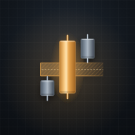
Ekran główny telefonu
Dziś
Przed sesjąPo sesjitekst roboczy
Ekran logowania
Dziennik
Pozostałe warianty w kontekstach
Niedźwiedzia luka z CE
Karta przeglądarki
Maskable (Android)
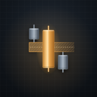
Ekran główny telefonu
Dziś
Przed sesjąPo sesjitekst roboczy
Ekran logowania
Dziennik
Bycza luka jako przerwa
Karta przeglądarki
Maskable (Android)
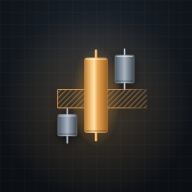
Ekran główny telefonu
Dziś
Przed sesjąPo sesjitekst roboczy
Ekran logowania
Dziennik
Pełny znak: siatka 512, glif w 90% kafla, kafel r = 112, tło #1f2731 → #0b0e12, siatka wykresu 4%, poświata 22%, cień pod znakiem; złoto metal #b9792c → #fde2ae → #9a5f1f, stal #4a5562 → #a9b4bf → #3a434e. Favicon: siatka 32, płaski kafel z ramką #35404d. Maskable: pełne tło, glif 72%. Apple touch 180: pełne tło, glif 84%.